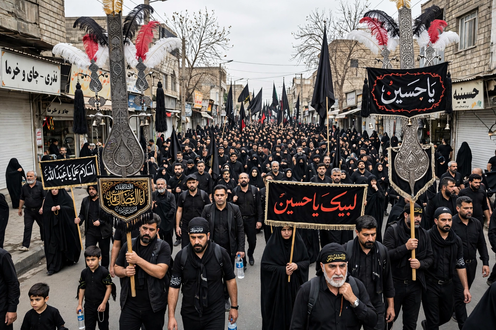

| Ashura | |
 An Ashura procession of mourners | |
| Date | 10 Muharram (Islamic calendar) |
|---|---|
| Observed by | Muslims worldwide; central to Shia Islam |
| Significance | Martyrdom of Husayn ibn Ali at Karbala (680); for Sunnis, also the day Moses was saved from Pharaoh |
Ashura (Arabic: عاشوراء, from ʿashara, "ten") is the tenth day of Muharram, the first month of the Islamic calendar. For Shia Muslims it is the climax of the mourning of Muharram, commemorating the martyrdom of Husayn ibn Ali, the grandson of the Prophet Muhammad, who was killed with his companions at the Battle of Karbala in 680 AD (61 AH) by the forces of the Umayyad caliph Yazid I. For Sunni Muslims the day is also a recommended fast, associated with Moses' deliverance from Pharaoh.
Shia observances include mourning processions, passion plays (ta'ziya) re-enacting the events of Karbala, recitations of elegies, and acts of charity and blood donation; some participants practise forms of self-flagellation, which many senior clerics discourage. Millions of pilgrims converge on the shrines of Husayn and his half-brother Abbas in Karbala, Iraq, both on Ashura and on the fortieth day, Arba'in.
According to tradition, Muhammad found the Jews of Medina fasting on this day in gratitude for the salvation of Moses at the Red Sea, and adopted the fast; when the Ramadan fast was later instituted, the Ashura fast became optional. It remains widely observed by Sunnis, sometimes with the preceding or following day, and in some regions with special dishes — such as the Turkish pudding aşure, "Noah's pudding".
The martyrdom of Husayn is the defining event of Shia identity, crystallising themes of resistance to injustice and the schism between Sunni and Shia Islam. The slogan "Every day is Ashura, every land is Karbala" reflects its continuing symbolic power.